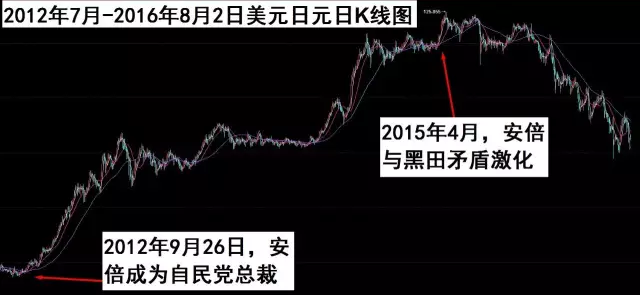

时寒冰：黑田、安倍的寒战与日元走势
2012年9月26日，安倍晋三战胜其他4位候选人，成为新一任自民党总裁，不久，顺理成章地二度就任日本首相。踌躇满志的安倍在竞选自民党总裁的时候，就提出要以超级宽松计划来拯救日本经济，因此，从安倍当选自民党总裁开始，日元就步入大跌势。
“安倍经济学”的核心，是实施超级宽松的货币政策，推动、加速日元贬值。
而这需要央行的配合。
任何一个国家，要想真正实现宽松，必须有财政政策与货币政策的结合。这也是为什么2008年中国推出四万亿救市计划后，大宗商品立即疯涨的原因——中国是世界上财政政策与货币政策结合得最天衣无缝的国家。
因此，安倍必须得到日本央行的支持。
2012年10月，还没当首相的安倍，就迫不及待地与时任日本央行行长的白川方明进行了罕见的一对一谈话，安倍敦促白川方明采取大胆的宽松政策，把当时只有0.3%的通胀率提高到2.0%。
在央行独立的体制下，安倍的这种做法显得非常露骨——1998年的日本法律规定：央行不应受政府的干预，而要保持制定政策的独立性。
自尊的白川方明拒绝安倍的建议，选择了辞职。
此时，黑田开始频频向安倍示好，他的态度比安倍更狠：他认为日本应将通胀率目标设定为3%，竟然比安倍要求的通胀目标还高出一大截。

说话更狠的人也可能更黑。
但继续支持的安倍已经顾不了太多，他果断选择了主动投怀送抱的黑田。
黑田东彦在上任后不久，即在2013年4月启动实施“异次元货币宽松”措施，黑田表示要在两年内达成2%的通胀目标摆脱通缩。2014年10月31日，日本央行宣布追加货币宽松，进一步扩大正在实施的量化和质化宽松政策。
黑田推动日元疯狂贬值、日本股市快速上涨。
但是，黑田与安倍的蜜月期非常短暂。
2014年11月19日，日本央行不出意料地维持了现有购债规模，表面看起来没有什么变化，但其实非常重要：黑田东彦赢得了大部分委员的支持。这次会议的投票结果是8:1，只有一名委员反对继续维持每年80万亿日元的资产购买规模（在2014年10月的政策决议中，日本央行内部的九名成员对于是否扩大QQE的投票结果是5:4）。这意味着，有三名成员转而支持黑田东彦的立场。
这对黑田无疑是一大胜利。
这个细节变化隐含的重要信息是：日本央行或者说日本开始进入黑田时代。
当天，黑田东彦在新闻发布会上，就昨天（2014年11月18日）安倍晋三推迟上调消费税提出了批评。他表示，日本的债务负担仍然是全球之首，政府和国会应该对此负责。央行的责任在于完成通胀目标。路透评论称，黑田这是在表达对安倍政府的不满，因为后者没有遵守其与央行的协议。该协议约定，日本央行将竭尽所能达成通胀目标，而政府承诺采取措施巩固财政。
此后，两人的矛盾日渐公开化。
2015年3月中旬，首相安倍晋三与黑田东彦举行例行会议，双方未就货币政策进行讨论，黑田希望安倍能理解日本央行没有因为原油价格下滑而进一步采取宽松措施的行为。按照黑田的说法，安倍并没有对此做出任何特别的提问。
此中信息一目了然。
安倍心中满满的苦涩。
黑田对安倍的不满越来越不加掩饰。
2015年4月16日，《日经亚洲评论》称，日本央行行长黑田东彦就债务计划警告日本首相安倍晋三，凸显政府和央行关系紧张。事实上，正是此后不久，日元的转折点到来。我在2015年趋势分析课上详细分析过这一点（大家可以自己对照一下日元从贬值到升值的转折点）。

上图为美元日元的日K线图。上涨代表着1美元可以换更多日元，意味着日元下跌，反之则代表着日元上涨。
黑田与安倍关系的日渐紧张，是必然的结果。黑田与欧央行行长德拉吉都属于个性极其鲜明的人，他们似乎都非常喜欢与市场预期对着干，对市场因他们而出现大幅度波动的血腥场面极其享受。
但这样做，时间久了也容易导致个人信誉破产，众所周知，德拉吉现在就只剩下一张嘴了。
正大踏步追赶上德拉吉的是黑田。
与德拉吉不同的是，黑田除了一张嘴，还有一颗足够黑的心。
黑田可以迅速变脸，推翻刚刚做过的表态。最典型的例子是，2016年1月15日，黑田在日本国会就是否要引进负利率的质询时明确表示“现阶段不予考虑”。但1月29日，就首次针对金融机构存向央行的存款推行“负利率”——尽管这个所谓的“负利率”象征意义大于实际意义，并不能对“安倍经济学”构成什么支持，但如此迅速、明确、大义凛然、视死如归、破罐子破摔的变脸风格也着实令人刮目相看。
黑田个性鲜明，安倍是个性更为鲜明的人。
这注定了两个人的蜜月期不会长久。
此后，安倍无论怎么折腾他的“经济学”，缺乏黑田的配合，就不再是真正意义上的“安倍经济学”。
因此，安倍与黑田反目之时，也是日元贬值结束之时，一个新的节点启动。决定日元走势的是黑田，而不再是安倍——没有央行货币政策支持，安倍的财政政策就是无源之水。
但安倍已经走在豪赌的路上，黑田有退路，但安倍没有。
2016年7月27日，安倍晋三在福冈市发表演讲时透露，日本政府的经济刺激计划规模将超过28万亿日元（约合2650.3亿美元），其中财政措施为13万亿日元。
财政刺激的架势拉开了，最关键的还要看黑田。
7月29日，日本央行的利率决议，仅仅将ETF年度购买规模从当前3.3万亿日元扩大至6万亿日元，而更重要的利率及QQE规模都不变。在当天下午的新闻发布会上，黑田冷冷地说：长期来看通胀预期总体上涨，2%的通胀目标将在2017财年达到。并且强调，日本央行没有汇率目标，货币政策与汇率不挂钩。
日元随即暴涨。
安倍的脸色有多黑可想而知。
由于日本央行不配合，8月2日，安倍晋三宣称的28.1万亿日元的刺激计划中，实际新增的政府支出只有6.2万亿日元，而其中，本年度的额外支出仅为4.6万亿日元。
日元随即再次暴涨。
让安倍闹心的不仅于此。日本首相安倍晋三眼中的“叛党者”原防卫大臣、小池百合子居然顺利当选了东京都知事，这样，在日方首脑当中，安倍又多了一个强硬的反对者。另一位坚定与安倍对着干的是冲绳县知事翁长雄志。冲绳县知事翁长雄志强硬要求美军撤离，而一旦小池百合子也强硬要求美军撤离东京的军事基地，则美军在日本的两大军事基地将同时“后院起火”。
安倍的后院原本就不平静。
日元强烈升值的现状一再粉碎安倍急切想通过日元贬值重振经济的梦想。
失去黑田支持的安倍，只有安倍，而不再有“安倍经济学”。
（说明：很久没有写跟趋势有关的文章了。这篇文章写了好几个小时，写《时寒冰说：未来二十年，经济大趋势》的时候经常熬夜眼睛花了，现在写东西的速度跟不上了。此文如果大家还说没有读明白，此微信就不再更新。）
于2016年8月3日
发一则我的广告，网址在：http://www.oagchina.com/shihanbing.aspx是关于游学、儿童教育与2017年趋势课的（2016年趋势课已经结束）。
行万里路破万卷书。9月出发去日本的游学团现在开始报名。咨询电话：400-696-0700、010-66075928、18500608899。所有游学的人会建一个长期微信群，长期交流。【原计划的8月改为9月】
儿童教育课程已经于2016年6月1日正式上线，首期主题《培养优秀子女的第一步》提出了一些颠覆性的观点，及时纠错，做正确的定位才能给孩子一个美好的未来。咨询电话：010-66075928，010-66018198，400-696-0700，18500608899。这期教育课程做从准备到录制到全部制作完成用了近4个月时间，以后每四个月到半年左右的时间会出一期。感谢支持的朋友！已经报名的朋友将陆续收到赠送的书。
时寒冰本人的微信公众号：
shihanbing2016
- 上一篇：犯错也是交易的一部分
- 下一篇：如松：避险大潮中的选择


发表评论